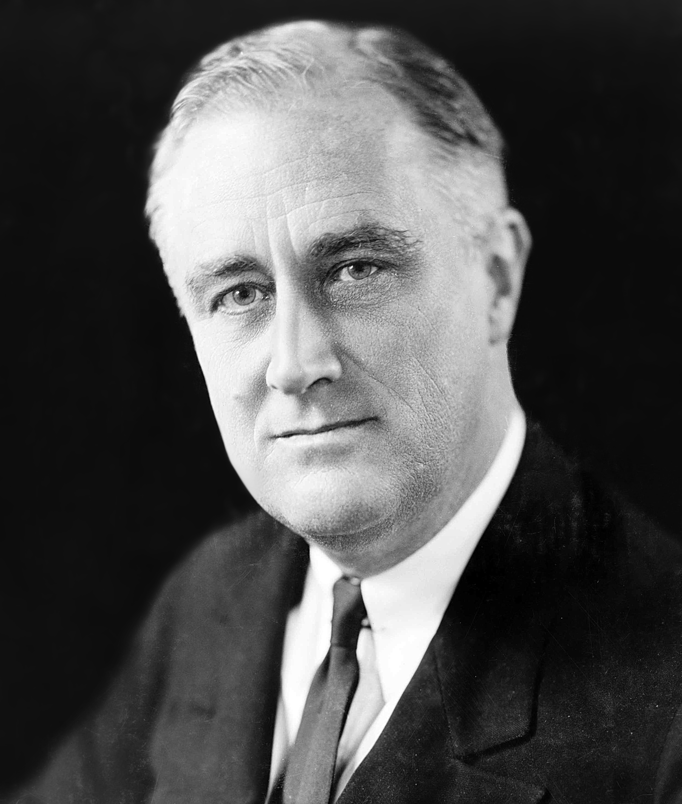
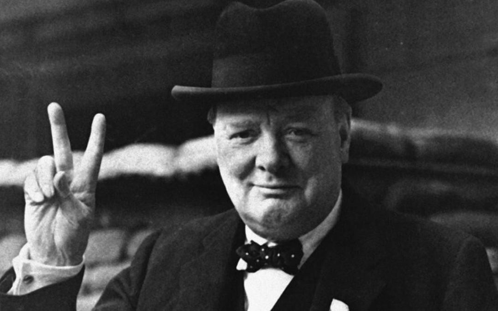
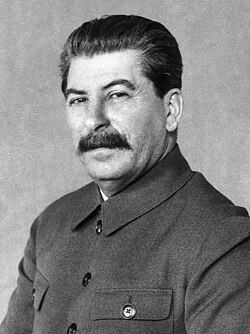

Page 3: Major Leaders of World War II
Essential Question: Who were the major political and military leaders of the war, and what was their role in WWII?
Answer to the Essential Question
Major political and military leaders shaped World War II through their decisions, leadership styles, and wartime goals.
Allied leaders such as Franklin D. Roosevelt, Winston Churchill, Joseph Stalin, Douglas MacArthur, and Dwight Eisenhower
helped organize military strategy, maintain public support, and coordinate the struggle against the Axis Powers.
Axis leaders such as Adolf Hitler, Benito Mussolini, Emperor Hirohito, and Hideki Tojo played major roles in pushing expansion,
militarism, and authoritarian control. Their leadership was significant because it influenced how the war began,
how it was fought, and how millions of civilians and soldiers were affected.
Leaders and Their Roles
| Leader |
Country |
Role |
Significance in WWII |
| Franklin D. Roosevelt |
United States |
President |
Led the United States through most of the war and helped build Allied cooperation. |
| Winston Churchill |
Britain |
Prime Minister |
Rallied Britain during its darkest period and became a symbol of resistance to Nazi Germany. |
| Joseph Stalin |
Soviet Union |
Dictator / Premier |
Directed the Soviet war effort on the Eastern Front. |
| Adolf Hitler |
Germany |
Dictator / Führer |
Led Nazi Germany and drove the war through aggression and ideology. |
| Douglas MacArthur |
United States |
General |
Commanded Allied forces in the Pacific. |
| Dwight Eisenhower |
United States |
General |
Served as Supreme Allied Commander in Europe and directed D-Day. |
Artifacts

Artifact 1
Franklin D. Roosevelt and Allied Cooperation
Franklin D. Roosevelt was the president of the United States for most of World War II.
He helped prepare the nation for war, supported Allied countries before direct American entry,
and worked closely with Churchill and Stalin.
Source

Artifact 2
Winston Churchill and British Resistance
Winston Churchill became prime minister of Britain in 1940 and led the country during a period of intense danger.
His speeches encouraged people to continue resisting even when Nazi Germany seemed unstoppable.
Source

Artifact 3
Joseph Stalin and the Eastern Front
Joseph Stalin led the Soviet Union during the German invasion and the brutal fighting that followed.
The Soviet Union suffered enormous losses but became one of the main forces that defeated Nazi Germany.
Source

Artifact 4
Adolf Hitler and Nazi Aggression
Adolf Hitler was the dictator of Nazi Germany and the central political figure behind the war in Europe.
His leadership pushed expansion, dictatorship, militarism, and racial ideology.
Source
Allied Leaders Mentioned
- Franklin D. Roosevelt
- Winston Churchill
- Joseph Stalin
- Douglas MacArthur
- Dwight Eisenhower
Axis Leaders Mentioned
- Adolf Hitler
- Benito Mussolini
- Emperor Hirohito
- Hideki Tojo